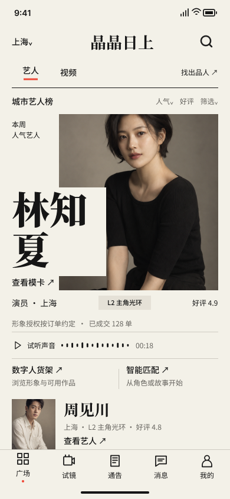
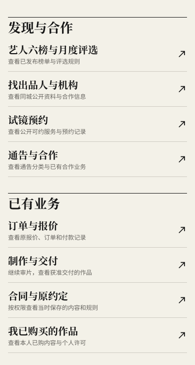
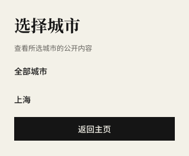
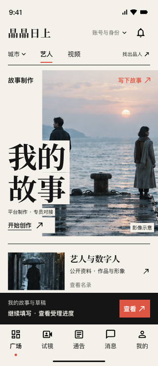

2026-10-23 · Figma 主页校准与本侧截图验收
回到最早的“先锋电影刊物”原稿
主页与视频频道已在原 Figma 文件内更新。保留海边竖幅大图、错位宋体标题、次级图文栏目和黑色续办条，业务继续采用最新五栏、城市与双频道、故事及既有业务入口。
本次交付为 Figma 主页设计。应用代码、业务接口和付款授权处理保持现有版本；其他页面仍需按原稿逐页校准。
原稿、修改前、修改后
最早原稿 · 左侧主页
按宽度等比显示。完整原稿包含主页与入戏页；旧导航和示例作品只作为历史设计内容。
修改前 · 在线 Figma

本次通过有权限的账号实际导出。旧稿已有大照片和错位标题；此前匿名截图没有加载照片，不能据此认定没有参考原稿。
修改后 · Figma 正式主页
 390 × 844；增加最新城市和双频道，保留故事创建、本人草稿以及现有发现与业务入口。照片是影像示意。
390 × 844；增加最新城市和双频道，保留故事创建、本人草稿以及现有发现与业务入口。照片是影像示意。四种主页状态
向下滚动后的现有业务目录

长名称、说明和箭头已完整检查。目录在正式主页的可滚动区域内。业务入口沿用现有页面
| 入口 | 现有路径 |
|---|
| 故事创建 / 本人故事与草稿 | /customization/new
/customization |
| 艺人与数字人 / 现成视频 | /discover
/stock/catalog |
| 六榜月评选 / 出品人与机构 | /engagement
/engagement?view=buyers |
| 试镜 / 通告与合作 | /audition
/notices |
| 订单 / 制作交付 / 合同 | /orders
/production
/contract |
| 已购作品 / 账号 / 通知 | /stock/purchases
/account
/operations/notifications |
Figma 提供城市和频道的设计状态稿；原文件原有原型连线未改。本次没有把设计检查写成业务接口联调或正式付款验收。

城市选择浮层：上海仅为状态示例。检查范围
本侧逐项检查了真实 Figma 导出画面、字体、图片、图文比例、栏目顺序、长名称、目录和五栏。每页为原生可编辑的文本、布局、组件和矢量；整页截图用于对照。另在本地设计预览中复验了 320 像素窄屏。
320 像素设计预览

标题与说明不相碰，次级栏目位于底部续办条上方；此项是设计预览，尚非 App 新主页实现。另一位同事和用户的人工审阅另行记录；本页是本侧设计检查结果。